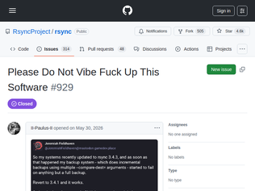

"Cloudflare is known to use fingerprinting to detect scrapers For example, they use JA3 fingerprints and match them against the UA to block stuff like cURL while allowing OkHttp (Android clients) - but this can be easily be spoofed with packages such as CycleTLS [1].I don't want to defend them, because they gate away a good chunk of the internet with their "bot protection", but unless you do PoW (which is also ecologically a nightmare), probably fingerprinting is the way to go - completely destroying the privacy of everyone involved.Cromite, a privacy conscious fork of Chromium for Android, has constantly issues with CloudFlare Turnstile [2] because they (Cloudflare) try to fingerprint it in multiple ways in order to pass the challenge. The only way to get it to work would be to join the CloudFlare Browser Developer program - which requires signing an NDA. Rightfully so, the project maintainer didn't want to do it.If you want to see the extent of what CloudFlare does to fingerprint the browsers, just have a look in the issue [2] and see which flags need to be disabled in order to allow CloudFlare to pass the challenge.I understand both sides, but at least CloudFlare could be flexible enough to fall back to PoW instead of just blocking people from sending forms or accessing websites...[1]: https://github.com/Danny-Dasilva/CycleTLS[2]: https://github.com/uazo/cromite/issues/2365"
"> Plus privacy.resistfingerprinting isn't enabled even when selecting "Strict" "Enhanced Privacy Protection" in the settings, great job there Mozilla.For good reason. I've run that setting for ages but I kept having to disable it and add workarounds because websites would break in weird ways. Timezones in scheduling websites being messed up nearly made me miss a couple of appointments. There's no way to tell the user Firefox isn't broken without displaying a permanent banner like "if websites are broken in any way or you see weird glitches or your computer's time is wrong or fonts look weird or videos don't always work right, click here to disable fingerprinting protection".Interestingly, Turnstile breaks with resistfingerprinting but works with fingerprintingProtection, I guess the latter takes this crap into account."
""If they know you're spoofing, you're not spoofing hard enough."This stupid "war against bots" is going to lead to the downfall of the Internet and effectively turn it into another walled garden where only "approved" (anti-)user agents are allowed. Don't fall for the nonsense about "AI scrapers" --- it's just a way to manufacture consent."
"Every time I try to install Docker there's a warning that being in the "docker" group is equivalent to having root access.You should probably know about this workaround by now."
"I had a similar experience where I have a DB user who only has access to some parts of the DB and I use Claude Code to answer queries. On one occasion, unable to answer something, it used kubectl to try to get a secret out of a prod cluster. I was watching at the time, since that was a time I used to do that, and so I just hit Esc and interrupted it[0] but ever since then I've had little scripts in my repos that launch kubectl-backed Claude Code instances for this sort of thing. They can't really do anything. They're kubed in.0: Ha, Eliezer, I just pulled the plug! ;)"
"This has been a known Docker "feature" since the beginning, nothing new here. This pattern is used to configure host machines by some tools."
"The article made up the claim it’s not from the paper itself.There was some improvement in cognitive scores, but no placebo group. Without a placebo group, there are a lot of explanations for the data."
"Not something to worry for the general population, but persons with genetic likelihood of getting Parkinsons should be wary of taking both Creatine and Coffee together. https://pmc.ncbi.nlm.nih.gov/articles/PMC4573899/"
"The 30% figure seems to be completely made up and this whole article is adfarm-bait.The CABA trial is an 8-week single-arm pilot (no placebo). The study measured cognitive improvement over 8 weeks in a single group — not "slowing of decline versus placebo." There is no 30% figure anywhere in the paper.I'm glad we have AI to quickly read this kind of stuff and check these kinds of claims for us."
""Agent Readiness" will likely age as well as "Web 4.0 Blockchain Integration" has.(To be entirely clear, not because agents won't be a relevant thing, although certainly I have my doubts, but because I believe even if they are a relevant thing, requiring special allowances from sites undermines the whole point, and such things will only end up used by bad actors to mismatch what agents see to what humans see, and so will be intentionally ignored.)"
"I'd love best practices around, say, login forms, e.g.:- use standard input field names password managers recognize - disable autocompletion and autocapitalization on the login field- if it's an email, use the correct HTML5 input type- don't have a form with just a login email and force the user to click to enter the password- follow NIST SP 800-53, e.g. no SMS 2FA and no arbitrary password rotation and composition rulesOr how many sites that have a form with only one input don't automatically focus on it."
"I think the presentation may fail to land because, on the surface, it is nearly wholly AI-generated, but also after reading through many of the entries, everything besides the Agent section seems to clearly communicate solid web hygiene and I wouldn't mind sending this to a burgeoning web developer.It is ironic though that the site itself fails to employ even its own "required" practices, but that's more of an aside."

"This whole brigading is bizzarre and some people are behaving like irrational animals. I potentially understand the motivations that might bring one to want to "win" this battle but this really isn't it - it just makes you sound like a fanatic.It takes 5 minutes to search for "regression" on the issue page and go through the 17 results. There are potentially even more on the tracker used prior to github.I think this behavior is very silly and people are just trying to justify their hate to AI by latching onto every possible thing, seemingly forgetting that before AI people did mistakes as well.If you have proof that AI involvement in rsync has lead to a significant increase in open issues please show it to me - I'll be happy to change my mind."
"I find the way that issue was opened incredible obnoxious, but it is baffling that the maintainers seem to have let AI loose on rsync. Like, why? Why try comparatively experimental crap when your fortune and reputation is made and you're the leader of a niche and immune to market pressure and the people love the thing and it does exactly what it's supposed to and works well?It's like the Matrix, with the little rant about the primitive human minds not being able to accept paradise. You wrote the perfect tool, you won, almost undisplaceable in a niche, reliable, a metaphorical household name. It makes no sense to anyone to gamble or mess with that, it's just mind boggling.And that's still a damn obnoxious thing to do in the formal issue tracker. Bad attitude, bad faith."
"I truly don't get itYou have a rock solid piece of software used by an infinite amount of people and other services. It works fine, does it's job and just have some time to time updates due to minor bug fixes.Why do we need AI here?And more over, why people is saying "fork it and use the previous version". It should be actually all the way around, create a parallel fork younamethetool-ai and keep the OG untouched.What I have to do now, keep a fork of my entire system's toolkit?"
"I've been using openrsync here and there since it was announced and it's definitely improved over time. I'm looking forward to when I can use it exclusively.The one place in my usage where it doesn't match Samba rsync is with the following:openrsync --rsync-path=openrsync -av -e ssh /etc/services example.com:/tmp/servicesI would expect openrsync to create a remote file /tmp/services, but instead it creates /tmp/services/services.Normal directory mirroring as in -av -e ssh /path/to/src/ example.com:/path/to/dst/ works as it does with Samba rsync."
"Given the sudden spike in vibe-coded commits to the rsync codebase, and regressions that’s introduced, this is very good news."
"There's also a Go implementation by Michael Stapelberg / the Gokrazy team: https://github.com/gokrazy/rsync"
""Too Many Requests"- https://web.archive.org/web/20260531130034/https://jbkempf.c...- https://archive.md/ln5UE"
"'AV2 decoding is roughly five times more complex than AV1 decoding. In practice, that means software running on today’s hardware will struggle to decode AV2 in real time without careful, architecture-specific optimization'AV1 software decoding is already very intensive so AV2 decoding benchmarks are the next thing that would be really interesting (or mortifying) to see."
"A codec spec isn't done until there is at least one decoder developed in the field. So reference + 1. The field implementations often become the de facto spec.Reading the MPEG1 specs back in the 90s as a child opened my eyes to how to define complex systems. For a media coding standard, they spent most of their time saying how to interpret encoded bytes, which I realized is genius. Be descriptive about decoding and you don't have to be prescriptive about encoding. Encoding is where you can apply all the creativity, but you need to provide a way to have a shared understanding of the encoded bytes."
"Somewhere in the middle of the article, I stumbled upon a multilanguage sample and noticed that this font has wonderful Cyrillic glyphs. In my previous experience with new fonts Cyrillic usually is not as great as the latin part of the font. The exception being fonts done by foundries based in cyrillic speaking countries, like ParaType fonts [1]. Well, the last third of the article goes into the details on how they achieved it.[1] https://www.paratype.com/fonts/pt/yefimov-sans?tab=gallery"
"the formality slider (play with it at the google fonts page linked in the article[0]) is genuinely one of the coolest uses of a variable font axis i've seen in recent memory. it feels like we're witnessing the slow and steady vindication of metafont.[0] https://fonts.google.com/specimen/Shantell+Sans"
"The font is great. What I miss is a step forward in technology: variable glyphs. The feeling of reading a handwritten text is lost when the letters have always the same shape. If it were possible to add 5-6 little variations for each letter and alternate them randomly, it would be awesome."
"Twenty years ago, I don't think any of us were excited about a future internet where we couldn't trust whether what we were seeing or reading was genuine. I hope one day we'll be able to look back on this era as an aberration, like that scene in Mad Men where the Drapers fling their picnic rubbish onto the grass and drive away."
"I actually can’t wait for the future where I upgrade hardware in order to upgrade my ai as an alternative to an expensive subscription.There are many problems I want to work on which require billions of tokens. These are completely inaccessible without corporate project sponsorship at the moment. An asic generation machine which can pump out a few 10s of thousands of tokens per second at opus4.6 quality is more than sufficient."
"I saw '1-bit' and my mind first went to 1-bit dithered B&W image generation, not 1-bit model weights....and so now I'm wondering how cool /fast / compressed a diffusion image generator could be if the images it was trained on / space it worked in was limited to 1 bit (Floyd-Steinberg / Atkinson / your favorite algo here) dithered images.Training would surely be pretty quick and probably fit onto one modern GPU."
"I just upgraded some code to Zig 0.16.0 and I am actually really happy with the results. It impacted A LOT of things, but the changes were actually very good and seems to have set the language for a bright future, especially with the new IO mechanism which allows supper efficient code that looks good whether it's implemented single-threaded, multi-threaded or just via an event loop!If you haven't tried Zig since 0.16.0 was released, I highly recommend having a look. The release notes for this release were huge!!https://ziglang.org/download/0.16.0/release-notes.html"
"After having used Zig for a couple of months now I am convinced it is a fantastic tool language. You just pick it up to hack some idea together freely. Every time I hit a wall, I find the creators have thought of it already and offers comfort. But nothing gets in your face how to use the programming language "correctly".For me it is now the go-to "tinker in my garage" language."
"After watching Andrew Kelley's interview video makes me want to pick up Zig: https://www.youtube.com/watch?v=iqddnwKF8HQ"

Cloudflare Turnstile requiring fingerprintable WebGL
"Cloudflare is known to use fingerprinting to detect scrapers For example, they use JA3 fingerprints and match them against the UA to block stuff like cURL while allowing OkHttp (Android clients) - but this can be easily be spoofed with packages such as CycleTLS [1].I don't want to defend them, because they gate away a good chunk of the internet with their "bot protection", but unless you do PoW (which is also ecologically a nightmare), probably fingerprinting is the way to go - completely destroying the privacy of everyone involved.Cromite, a privacy conscious fork of Chromium for Android, has constantly issues with CloudFlare Turnstile [2] because they (Cloudflare) try to fingerprint it in multiple ways in order to pass the challenge. The only way to get it to work would be to join the CloudFlare Browser Developer program - which requires signing an NDA. Rightfully so, the project maintainer didn't want to do it.If you want to see the extent of what CloudFlare does to fingerprint the browsers, just have a look in the issue [2] and see which flags need to be disabled in order to allow CloudFlare to pass the challenge.I understand both sides, but at least CloudFlare could be flexible enough to fall back to PoW instead of just blocking people from sending forms or accessing websites...[1]: https://github.com/Danny-Dasilva/CycleTLS[2]: https://github.com/uazo/cromite/issues/2365"
"> Plus privacy.resistfingerprinting isn't enabled even when selecting "Strict" "Enhanced Privacy Protection" in the settings, great job there Mozilla.For good reason. I've run that setting for ages but I kept having to disable it and add workarounds because websites would break in weird ways. Timezones in scheduling websites being messed up nearly made me miss a couple of appointments. There's no way to tell the user Firefox isn't broken without displaying a permanent banner like "if websites are broken in any way or you see weird glitches or your computer's time is wrong or fonts look weird or videos don't always work right, click here to disable fingerprinting protection".Interestingly, Turnstile breaks with resistfingerprinting but works with fingerprintingProtection, I guess the latter takes this crap into account."
""If they know you're spoofing, you're not spoofing hard enough."This stupid "war against bots" is going to lead to the downfall of the Internet and effectively turn it into another walled garden where only "approved" (anti-)user agents are allowed. Don't fall for the nonsense about "AI scrapers" --- it's just a way to manufacture consent."